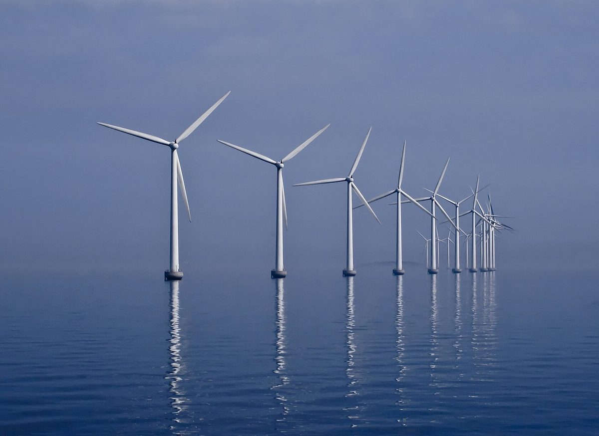

3조5,000억 원 규모 완도 장보고 해상풍력, 전남개발공사 출자금 부족으로 공공 지분 줄어들 우려

전남광주시의회 행정사무감사서 출자 가능 재원 약 1,300억 원 중 약 1,000억 원 필요 지적…의원 추산 주민 수익 완도 연 267억·신안 216억 원, 집행부는 출자 요청 받은 적 없다고 답변
3조5,000억 원 규모의 전남 완도 장보고 해상풍력 사업에서 공공 지분을 맡은 전남개발공사가 초기 출자금을 마련하지 못해 지분 일부를 민간에 넘겨야 할 수 있다는 우려가 5일 전남광주통합특별시의회 행정사무감사에서 나왔다. 무안청사에서 열린 기획재정위원회의 재정기획본부 감사에서 문갑태(여수5)·심철의(서구4)·김문수(신안1) 의원은 전남개발공사와 한국서부발전, 코오롱글로벌 등이 각각 약 33%씩 지분을 나눠 내년 3월 특수목적법인(SPC)을 세우려는 이 사업에 공사 몫으로 약 1,000억 원이 필요한데, 공사의 출자 가능 재원은 약 1,300억 원에 그친다고 지적했다. 의원들은 이 돈을 장보고 사업에 넣으면 공사의 다른 사업이 어려워지고, 뒤이어 추진되는 신안 해상풍력까지 공공 지분이 줄면 주민에게 돌아갈 수익과 기본소득 재원에도 영향이 갈 수 있다고 주장했다. 김문수 의원은 사업이 계획대로 진행되면 주민 수익이 완도에서 연간 267억 원, 신안에서 216억 원 생길 것으로 추산했고, 심철의 의원은 "현금이나 현물 출자를 통해서라도 공공 지분을 유지할 방안을 마련해야 한다"고 요구했다. 이에 대해 전한성 통합시 재정기획본부장은 사업과 관련한 출자 요청을 받은 사실이 없다며 구체적인 출자 문제는 소관 부서와 협의하겠다고 답했다.
시민에너지 관점
덴마크는 2009년부터 2020년까지 새로 세우는 풍력발전기 지분의 20% 이상을 인근 주민에게 먼저 사도록 내놓게 해, 바람에서 나온 이익이 발전기 곁 마을에 남도록 했다. 공공 재원이 모자라면 민간 지분을 늘려서라도 사업을 서두르는 편이 낫다는 반론이 나올 수 있지만, 공공 지분이 빠진 자리를 외부 자본이 채우면 의원들이 추산한 주민 수익과 기본소득 재원은 그만큼 지역 밖으로 빠져나간다. 공공이 지분을 지키는 데서 멈추지 말고 주민과 지역 협동조합이 그 지분에 직접 출자할 길을 열면, 모자란 출자금을 메우면서 주민이 해상풍력의 주인이 될 수 있다. 통합시와 전남개발공사는 특수목적법인 설립 전에 출자 재원 계획을 공개하고 주민 출자 몫을 함께 설계해야 한다.
출처: 연합뉴스 2026-11-05 박철홍 원문 보기
3兆5,000億ウォン規模の莞島・張保皐洋上風力、全南開発公社の出資金不足で公共持ち分縮小の懸念
全南光州市議会の行政監査で、出資可能財源約1,300億ウォンのうち約1,000億ウォンが必要と指摘…議員試算の住民収益は莞島で年267億・新安で216億ウォン、執行部は出資要請を受けていないと答弁
3兆5,000億ウォン規模の全羅南道莞島・張保皐洋上風力事業で公共持ち分を担う全南開発公社が初期出資金を用意できず、持ち分の一部を民間に譲らざるを得なくなるおそれがあるとの懸念が、5日の全南光州統合特別市議会の行政事務監査で示された。務安庁舎で開かれた企画財政委員会の財政企画本部監査で、ムン・ガプテ（麗水5）、シム・チョルイ（西区4）、キム・ムンス（新安1）の各議員は、全南開発公社と韓国西部発電、コーロングローバルなどがそれぞれ約33%ずつ出資し、来年3月に特別目的会社（SPC）を設立しようとしているこの事業に公社分として約1,000億ウォンが必要なのに対し、公社の出資可能財源は約1,300億ウォンにとどまると指摘した。議員らは、この資金を張保皐事業に投じれば公社のほかの事業が難しくなり、続いて進められる新安洋上風力まで公共持ち分が減れば、住民に還元される収益や基本所得の財源にも影響しかねないと主張した。キム・ムンス議員は、事業が計画通り進めば住民収益が莞島で年間267億ウォン、新安で216億ウォン生じると試算し、シム・チョルイ議員は「現金や現物の出資によってでも公共持ち分を維持する方策を講じるべきだ」と求めた。これに対しチョン・ハンソン統合市財政企画本部長は、事業に関する出資要請を受けた事実はないとし、具体的な出資の問題は所管部署と協議すると答えた。
市民エネルギーの視点
デンマークは2009年から2020年まで、新設する風力発電機の持ち分の20%以上をまず近隣住民に購入の機会として提供させ、風から生まれる利益が発電機のそばの集落に残るようにした。公共の財源が足りないなら民間の持ち分を増やしてでも事業を急ぐ方がよいとの反論もありうるが、公共持ち分が抜けた穴を外部資本が埋めれば、議員らが試算した住民収益や基本所得の財源はその分だけ地域の外へ流れ出る。公共が持ち分を守るだけで終わらず、住民と地域の協同組合がその持ち分に直接出資できる道を開けば、不足する出資金を補いながら住民が洋上風力の持ち主になれる。統合市と全南開発公社は、特別目的会社の設立前に出資財源の計画を公開し、住民の出資枠をあわせて設計すべきだ。
出典: 聯合ニュース 2026-11-05 パク・チョルホン 原文を読む
规模3.5万亿韩元的莞岛张保皋海上风电，因全南开发公社出资金不足恐致公共股份缩水
全南光州市议会行政监查指出，约1,300亿韩元可出资财源中需投入约1,000亿韩元…议员估算居民收益莞岛每年267亿、新安216亿韩元，执行部门称未收到出资请求
5日在全南光州统合特别市议会的行政事务监查中，有议员担心，在规模3万5,000亿韩元的全罗南道莞岛张保皋海上风电项目中负责公共股份的全南开发公社可能筹不到初期出资金，以致不得不把部分股份让给民间。在务安办公楼举行的企划财政委员会对财政企划本部的监查中，议员Moon Gap-tae（丽水5）、Sim Cheol-ui（西区4）、Kim Moon-soo（新安1）指出，该项目由全南开发公社、韩国西部发电、Kolon Global等各持约33%股份，计划明年3月成立特殊目的法人（SPC），公社需出资约1,000亿韩元，而公社可用于出资的财源仅约1,300亿韩元。议员们主张，如果把这笔钱投入张保皋项目，公社的其他项目将难以推进；若随后推进的新安海上风电的公共股份也减少，返还给居民的收益和基本收入财源也可能受到影响。Kim Moon-soo议员估算，项目如按计划推进，莞岛每年将产生267亿韩元、新安216亿韩元的居民收益；Sim Cheol-ui议员要求"即使通过现金或实物出资，也要拿出维持公共股份的办法"。对此，统合市财政企划本部长Jeon Han-seong回应称，未收到与项目相关的出资请求，具体出资问题将与主管部门协商。
市民能源视角
丹麦在2009年至2020年间要求新建风机必须把至少20%的股份优先提供给附近居民认购，让风带来的利益留在风机旁的村庄。有人可能反驳说，公共财源不足时，即使增加民间股份也应加快推进项目，但如果公共股份留下的空缺由外部资本填补，议员们估算的居民收益和基本收入财源就会相应流出地方。公共部门不应止于守住股份，而应开辟让居民和地方合作社直接出资入股的渠道，这样既能补上出资缺口，也能让居民成为海上风电的主人。统合市和全南开发公社应在成立特殊目的法人之前公开出资财源计划，并同步设计居民出资份额。
来源: 韩联社 2026-11-05 Park Cheol-hong 查看原文
Concern that the public stake in the 3.5 trillion won Jangbogo offshore wind project off Wando could shrink as Jeonnam Development Corporation lacks investment funds
Council audit hears that about 100 billion won of roughly 130 billion won in available funds would be needed; a councillor estimates resident income of 26.7 billion won a year in Wando and 21.6 billion won in Sinan, while officials say no investment request has been received
Concern was raised at an administrative audit of the Jeonnam-Gwangju Integrated Special City Council on Nov. 5 that Jeonnam Development Corporation, which holds the public stake in the 3.5 trillion won Jangbogo offshore wind project off Wando in South Jeolla, may fail to raise its initial investment and have to hand part of its stake to private investors. At the Planning and Finance Committee's audit of the city's Financial Planning Headquarters at the Muan office, councillors Moon Gap-tae (Yeosu 5), Sim Cheol-ui (Seo-gu 4) and Kim Moon-soo (Sinan 1) said the corporation would need about 100 billion won for its share of the project, in which it, Korea Western Power and Kolon Global each hold about 33% and plan to set up a special purpose company (SPC) next March, while its funds available for investment amount to only about 130 billion won. The councillors argued that putting the money into Jangbogo would make the corporation's other projects difficult, and that if the public stake also shrinks in the Sinan offshore wind project that follows, the income returned to residents and funding for basic income could be affected. Kim estimated that if the project goes ahead as planned it would generate resident income of 26.7 billion won a year in Wando and 21.6 billion won in Sinan, while Sim demanded "a way to maintain the public stake, even through cash or in-kind investment." In response, Jeon Han-seong, head of the city's Financial Planning Headquarters, said no investment request related to the project had been received and that specific investment issues would be discussed with the responsible department.
Citizen Energy View
From 2009 to 2020 Denmark required that at least 20% of the shares in new wind turbines be offered first to nearby residents, so that profits from the wind stayed in the communities beside the turbines. Some may argue that when public funds run short it is better to speed the project along even by enlarging private stakes, but if outside capital fills the gap left by the public stake, the resident income and basic-income funding the councillors estimated will flow out of the region to the same extent. Rather than stopping at defending the public stake, opening a way for residents and local cooperatives to invest directly in it would help cover the funding shortfall while making residents owners of offshore wind. The city and Jeonnam Development Corporation should publish their investment funding plan before the special purpose company is set up and design a share for resident investment alongside it.
Source: Yonhap News Agency 2026-11-05 Park Cheol-hong Read the original